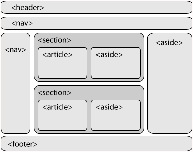

Que es Etiqueta Estas son estructuras basicas las cuales contienen atributos y contenidos contienen 91 etiquetas y en ellas 10 son obsoletas. En lo cual sus atributos son p ares nombre-valor separados por "igual" y escritos y luego su elemento y se encierran entre comillas que pueden ser simples o dobles "o" Su estructura seria asi: tag attribute1="value1" attribute2="value2">content
Son utilizados en hojas de estilo cascada y se divide en 4 Atributos basicos Atributos de internacionalizacion Atributos de eventos Atributos de foco atributos basicos son aquellos que se ueden utilizar en todas las etiquetas y son id="texto" class="texto" style="texto" title="texto" Atributos de internacionalizaci�n Son aquellos que se utilizan en diferentes idiomas lang="codigo" dir Atributos de eventos son aquellos que se utilizan con javascript onclick ondblclick onmousedown onmouseup onmousemove onmouseout onmouseover Atributos de foco es cuando se pierde el foco accesskey="letra tabindex="numero" onfocus, onblur
| comienza con header nav article secion section aside footer |  |